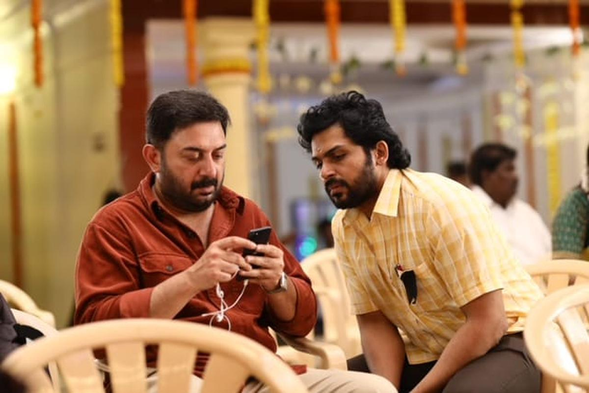

Director: C Prem Kumar
Cast: Karthi, Arvind Swami, Sri Divya, Rajkiran, Devadarshini
Music: Govind vasantha
Language:Tamil
Runtime: 178 minutes
Storyline: A man returns to his hometown after decades only to be showered with love and affection by a relative who he can’t seem to remember
Ratings: 8/10
While most filmmakers focus on the bigger aspects of their story to substantiate the so-called big-screen experience, C Prem Kumar belongs to a niche group of directors who like to concentrate on the finer, intimate moments of life. Probably because of his time spent behind the viewfinder as a cinematographer, Prem’s scenes look like animated still photographs, and just like his directorial debut 96, his sophomore outing Meiyazhagan is a series of moments in motion.
The plot kicks in when Arulmozhi, who has been forced to uproot himself from his hometown, Thanjavur, decides to visit the place after 22 years — to attend his cousin sister Bhuvana’s (a superb Swathi Konde) wedding. Even though he and his family are estranged from their money-minded relatives and have been living in Chennai, Bhuvan is the only relative he has an affection for, apart from the affable uncle Chokku mama (Rajkiran). His plan is to attend the reception, for Bhuvana’s sake and return to Chennai the same night. But then, he runs into a young man whose naivete is equally annoying and charming, and this meeting leads him on an unexpected journey of self-discovery.
Karthi truly lives the role of the innocent and highly extroverted village guy and we have seen him in similar roles in earlier films as well. Arvind Swami has matured more as an actor and this is reflected on screen as we see how effectively he exercises the extreme restraint and composure which are required for his role as Arul. Karthi is the perfect support to Arvind Swami in his journey of self-discovery.
The director has taken extensive liberty with the running time of nearly three hours and one does feel that certain aspects could have been edited out to prevent the lag and the meandering storyline. For instance, the song while they are eating Bhuvana’s wedding reception feast, the jallikattu scenes or the history sermon.
One must talk about Govind Vasantha’s music here. Director Premukmar has worked with the music director once again after 96 and he has delivered yet again. The music director’s haunting melodies especially, the song sung by Kamal Haasan, Yaaro Ivan Yaaro, and the BGM stand out. Cinematographer Mahendiran Jayaraju has captured the nuances of village life aptly and some of the scenes, especially the quiet night scenes, are captivating.
Rating: 0